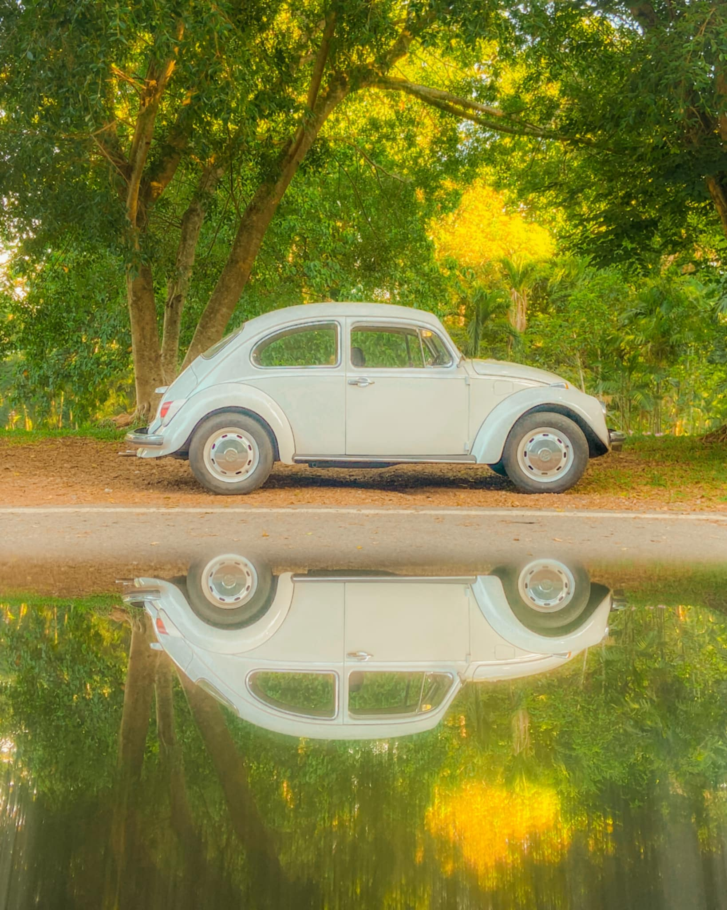
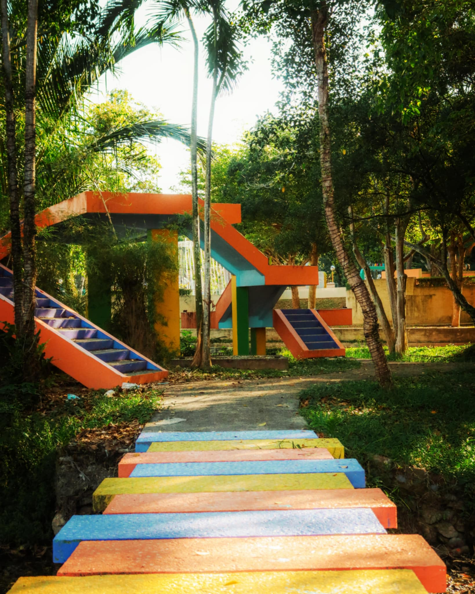
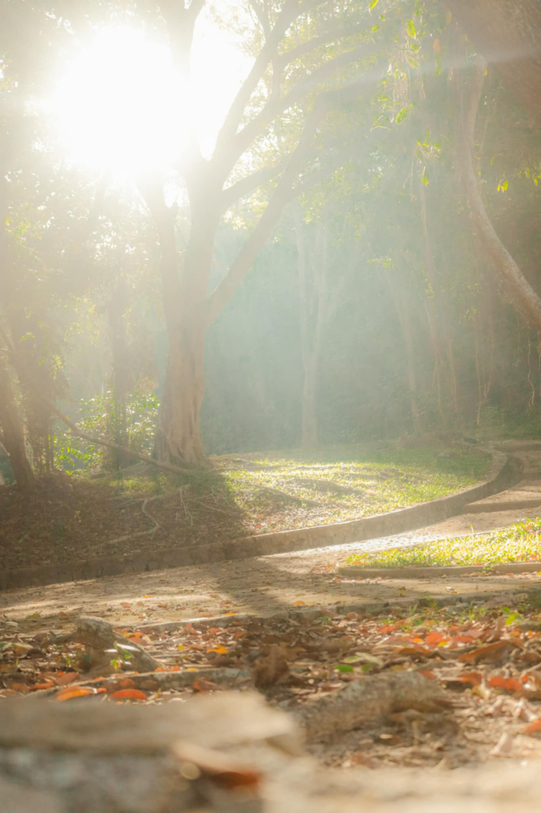
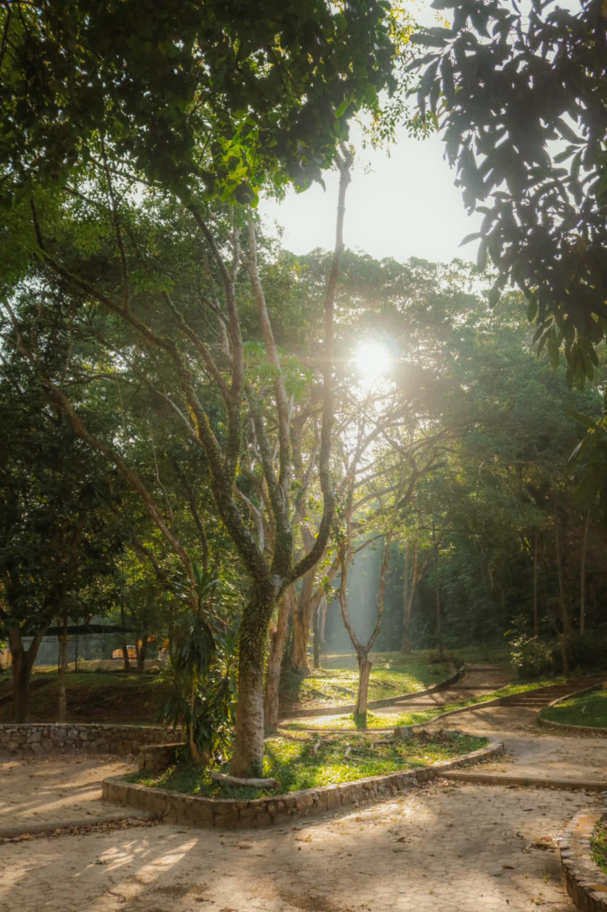

เป็นรูปที่ผมถ่ายด้วยกล้อง canon eos 80d ที่เป็นของพี่ผม
วันนั้นเป็นวันที่ผมได้ไปถ่ายรูปอยู่ที่หาดใหญ่ช่วงนั้นเป็นช่วงปิดเทอมผมเลยมีเวลาได้ไปเที่ยวทางภาคใต้ เเละได้ไปถ่ายรูปกับพี่ที่อยู่หาดใหญ่เลยได้รูปทั้ง 4 รูปนี้มาจริงๆยังมีอีกหลายรูปเลยเเต่เอามาใส่ไม่หมด555เลยเอามาเเค่ 4 รูปพอ ช่วงนั้นเป็นช่วงที่ผมเริ่มฝึกถ่ายรูปโดยมีพี่สอนใช้กล้องเพราะปกติผมจะใช้กล้องโทรศัพท์มือถือถ่ายรูป ตลอดพอมาได้ถ่ายกับกล้องเเบบนี้เลยทำให้ติดใจ555
วันนั้นเป็นวันที่ผมได้ไปถ่ายรูปอยู่ที่หาดใหญ่ช่วงนั้นเป็นช่วงปิดเทอมผมเลยมีเวลาได้ไปเที่ยวทางภาคใต้ เเละได้ไปถ่ายรูปกับพี่ที่อยู่หาดใหญ่เลยได้รูปทั้ง 4 รูปนี้มาจริงๆยังมีอีกหลายรูปเลยเเต่เอามาใส่ไม่หมด555เลยเอามาเเค่ 4 รูปพอ ช่วงนั้นเป็นช่วงที่ผมเริ่มฝึกถ่ายรูปโดยมีพี่สอนใช้กล้องเพราะปกติผมจะใช้กล้องโทรศัพท์มือถือถ่ายรูป ตลอดพอมาได้ถ่ายกับกล้องเเบบนี้เลยทำให้ติดใจ555



